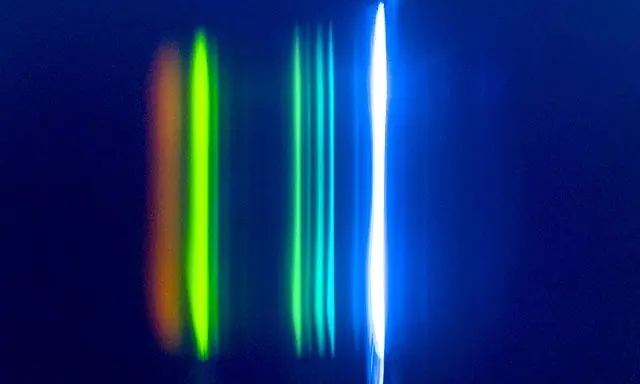
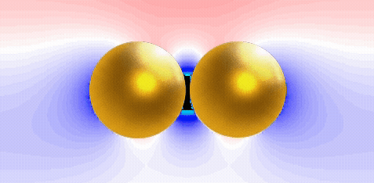
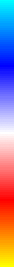
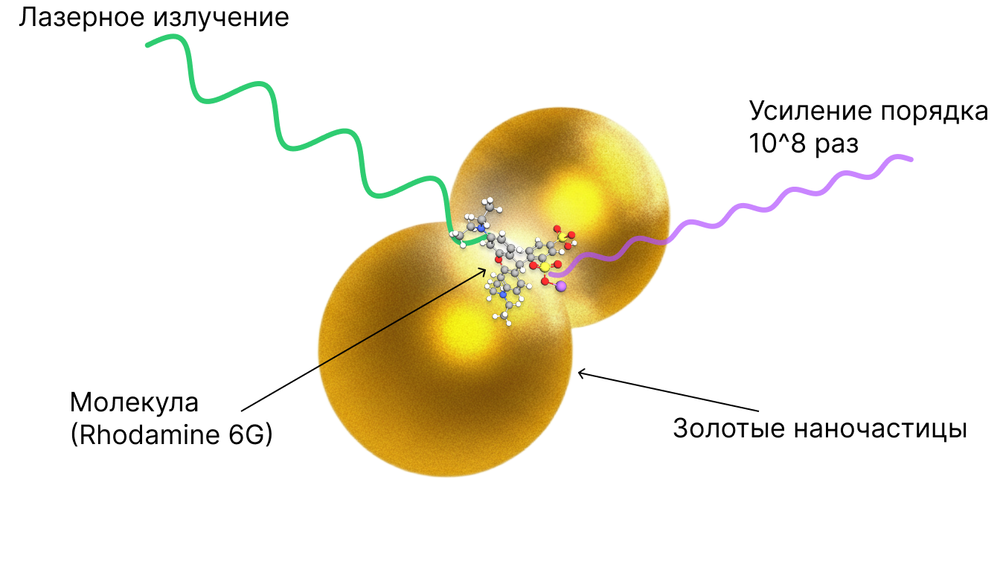
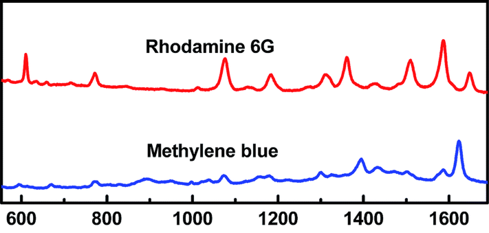

Мы сотрудничаем с ПСПбГМУ — Первым Санкт-Петербургским государственным медицинским университетом имени академика И. П. Павлова, что позволяет нам проводить клинические исследования и валидацию наших биосенсоров в реальных медицинских условиях.
От спектра к анализам: SERS и машинное обучение
Биохимический анализ крови — одно из базовых исследований, которое позволяет оценить общее состояние здоровья. Ежегодно более 30 миллионов человек в России сдают биохимический анализ крови.
Для определения базовых биохимических показателей используются несколько разнообразых методов: УФ кинетический тест, метод Яффе, колориметрический фототермический метод, ферментативный колориметрический метод, электрофорез.
Неэффективность масштабирования текущих методов
Традиционные методы биохимического анализа изначально создавались под умеренные объёмы лабораторных исследований. Но сегодня нагрузка уже другая: в 2024 году в России выполнено около 417 млн лабораторных исследований. При этом ожидается, что к 2030 году рынок будет расти со среднегодовым темпом 8,6–10,8%, что означает дальнейшее увеличение спроса на анализы и пропускную способность лабораторий.
Лабораторные исследования в России в 2020-2030 гг (млн)
При росте числа анализов эти операции масштабируются не линейно: увеличиваются время обработки, расход реактивов, вероятность человеческих ошибок и нагрузка на оборудование. Ситуацию усугубляет старение парка: по итогам 2024 года 24,8% медоборудования эксплуатируется более 10 лет. При отсутствии существенного обновления оборудования к 2030 году доля техники ">10 лет" может вырасти примерно до ~56%; оценка дана по методологии износа медицинского оборудования.
В результате возникает дефицит пропускной способности. В иллюстративном расчёте (если в 2024 лаборатории были загружены примерно на ~80%) к 2030 “задержка” может выражаться в порядка 200–290 млн исследований в год, которые либо уйдут во внешние мощности, либо будут накапливаться в очереди и растягивать сроки выполнения.
Спрос vs пропускная способность
Спрос, млн
Пропускная способность, млн
Задержка, млн
Для устойчивого развития биохимической диагностики необходим единый универсальный метод, который сможет определять все ключевые параметры всего за несколько минут.
Как свет может считывать информацию о молекулах?
И вот на сцену выходит эффект SERS — поверхностно-усиленная рамановская спектроскопия. Это чрезвычайно чувствительный метод, способный обнаруживать широкий спектр химических веществ.
В его основе лежит рамановская спектроскопия — техника, которая анализирует, как свет рассеивается на молекулах. Когда луч попадает на молекулу, возможны три типа рассеяния.
Чаще всего происходит Рэлеевское(ν0), когда свет возвращается без изменений. Реже наблюдается Стоксовое(ν0 - ν), при котором молекула, наоборот, забирает часть энергии, и отражённый свет становится менее энергичным.
Еще более редким является Анти-Стоксовое рассеяние (ν0 + ν), при котором молекула, наоборот, отдает часть энергии, и отражённый свет становится более энергичным.
Что самое классное, это то, что в случае Анти-Стоксового рассеяния сдвиг энергии (Δν) уникален для каждого типа молекул. Именно по нему можно идентифицировать исследуемое вещество.
Горячие точки: где рождается усиление
Плохая новость заключается в том, что интенсивность Анти-Стоксового рассеяния настолько слабая, что лишь 1 из 10^9 фотонов рассеивается таким образом - это как угадать число из миллиарда возможных вариантов - довольно редкое событие.

Лазерное возбуждение с длиной волны 488 нм. Самая яркая линия — рэлеевская; слева — стоксовые, справа — антистоксовые линии, но их интенсивность очень слабая.
Чтобы увеличить интенсивность, используется эффект плазмонного усиления. Проще говоря, в металлической наночастице под действием света начинают коллективно колебаться поверхностные электроны. Колебания при этом «не уходят вдаль» как обычная волна — энергия концентрируется рядом с наночастицей, в ближнем электромагнитном поле.


E
10
0
-10
Места, где энергия концентрируется, называются горячими точками. Именно в них и происходит усиление рассеяния света.
Помещая молекулу в горячую точку, мы усиливаем рассеяние света на ней - усиление может достигать миллионов и миллиардов раз (10^6 - 10^9 раз)!

Учим машину читать спектры
Энергия, фотоны, наночастицы - это все замечательно, сказал бы внешний наблюдатель. Но как из этого получить полезную информацию, и при чем тут ИИ?
Давайте разбираться. Помните, что мы говорили про сдвиг энергии (Δν)? Дело в том, что этот сдвиг уникален только для каждого типа соединения и его структуры в молекуле. Сама молекула - это не просто набор атомов, а сложная структура, которая имеет свою индивидуальность.
Если визуализировать все возможные колебания соединений в молекуле (на примере аминокислот), то это выглядело бы так:
Как видите, каждое соединение имеет свою уникальную форму колебаний, а значит и свою уникальную частоту(ν). К примеру, молекула, состоящая из соединений Serine и Threonine, будет иметь
спектр, отличный от молекулы, состоящей из соединений Alanine и Valine. Аналогию можно провести с музыкой - мелодию гитары и фортепиано Вы легко отличитите от мелодии скрипки и саксофона.
Интенсивность

Сдвиг частоты (см-1)
На графике выше представлены спектры двух молекул - Rhodamine 6G и Methyelene blue. Как видите, они имеют разный "состав" частот, благодаря которому их легко отличить друг от друга просто смотря на спектр.
Однако, для сыворокти крови ситуация более сложная. Протеом крови насчитывает порядка 13000 уникальных белков, а метаболитов около 4500.